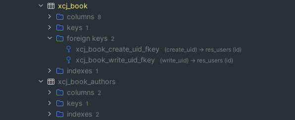

组件使用方式，在外键字段上设置属性db_constraint=False，将会在数据库层将外键关系解除，保留orm层的外键关系
class Author(models.Model):
name = 'xcj.author'
name = fields.Char(string="姓名")
bookids = fields.One2many("xcj.book", "author_id", string="作品")
class Book(models.Model):
name = 'xcj.book'
name = fields.Char(string="数目")
code = fields.Char(string="编号")
authorid = fields.Many2one("xcj.author", string="作者", dbconstraint=False)
authorids = fields.Many2many("xcj.author", "xcjbookauthors", "bookid", "authorid", string="作者", db_constraint=False)
author_id = fields.Many2one("xcj.author", string="作者")
author_ids = fields.Many2many("xcj.author", "xcj_book_authors", "book_id", "author_id", string="作者")
或
author_id = fields.Many2one("xcj.author", string="作者", db_constraint=True)
author_ids = fields.Many2many("xcj.author", "xcj_book_authors", "book_id", "author_id", string="作者", db_constraint=True)
author_id = fields.Many2one("xcj.author", string="作者", db_constraint=False)
author_ids = fields.Many2many("xcj.author", "xcj_book_authors", "book_id", "author_id", string="作者", db_constraint=False)
